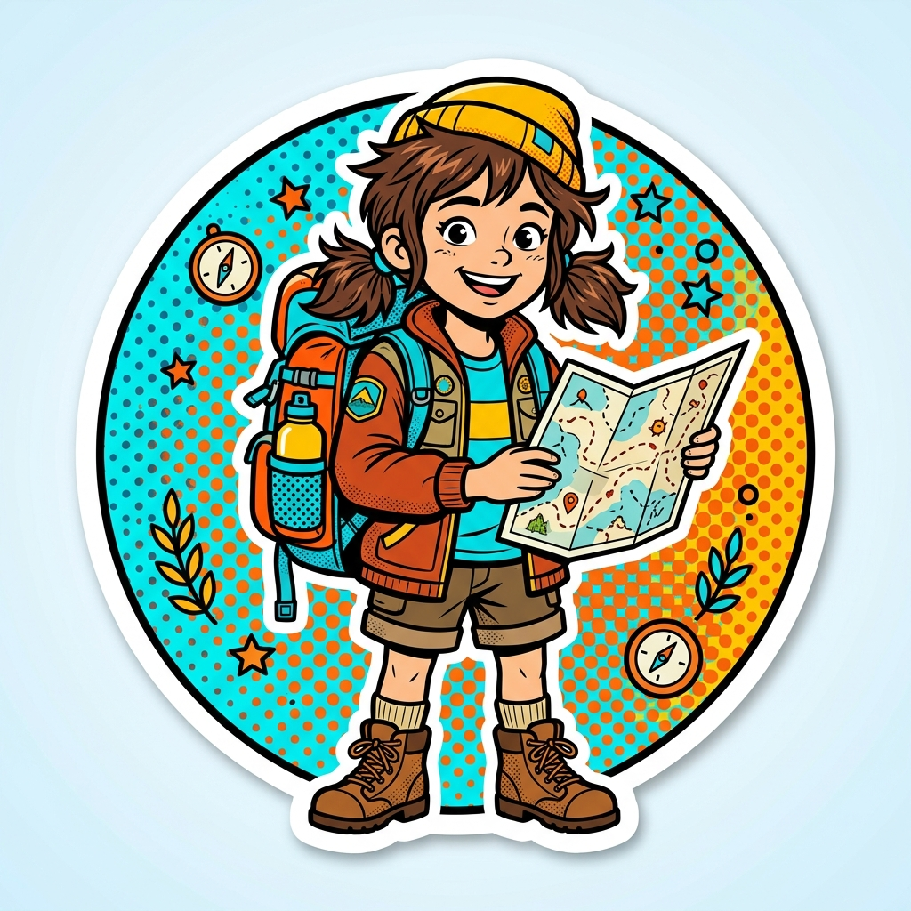

Horizonte das Frações
Aprenda frações de forma interativa, visual e divertida! Explore pizzas de frações, representações geométricas, dominós de equivalência e cálculos práticos do cotidiano.

Fatia do Saber
Observe as fatias pintadas na pizza e identifique a fração correspondente entre as opções disponíveis.
Encontre a Figura
Dada uma fração numérica em destaque, descubra qual das malhas geométricas e figuras representa exatamente esse valor.
Dominó das Frações
Conecte peças de dominó com a mesma proporção. Arraste ou clique na peça correspondente para avançar no caminho.
Frações no Cotidiano
Resolva situações do dia a dia com pacotes de farinha, arroz, leite e suco calculando partes de quantidades reais em gramas e mililitros.